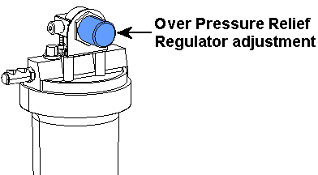

Adjusting OP Relief Regulator
This procedure describes how to adjust the over-pressure relief regulator of the pneumatics system.
Mechanically adjust the over-pressure relief regulator of the pneumatics system when:
- The over-pressure relief regulator is replaced.
- The maximum system pressure specification is revised.
-
Open a connection between the console PC and the AU.
For Windows XP:
-
Press the
[Windows] key, and then select
Start
> Programs > Administrative Tools > Remote Desktop Connection to AU PC to start desktop sharing.
The remote desktop connects to the instrument computer and allows remote control of the instrument and applications. When connected, the Remote Desktop window displays the Windows XP desktop of the instrument.
-
To navigate the AU desktop:
- Use the scroll bars on the right and bottom of the window.
- Move down the scroll bar on the right to see the AU desktop toolbar,
- The PC toolbar is at the bottom of the screen.
-
To switch between the console PC display and the AU display:
- To return to the console PC display, use the minimize button at the top of the AUSETUPPC screen.
- To restore the AU Windows screen, select AUSETUPPC Remote Desktop Connection in the toolbar at the bottom of the console PC display.
For Windows 8:
-
Press the
Windows key, type
remote, and open the Remote Desktop Connection program.
The remote desktop connects to the instrument computer and allows remote control of the instrument and applications. When connected, the Remote Desktop window displays the Windows 8 desktop of the instrument.
- Type in 192.168.2.4 into the Computer field and select Connect.
- Enter user for User Name and tech for the password if prompted.
-
If prompted at the RDS warning screen, check the box for "Don't ask me again for connections to this computer" and select
Yes.
Note: For Windows 8, the default console IP address is 192.168.2.3 and the AU IP address is 192.168.2.4. Neither IP address changes during the software load process.
-
To switch between the console PC display and the AU display:
- To return to the console PC display, use the minimize button at the top of the AU Desktop screen.
- To restore the AU Desktop screen, press the Windows key, type remote, and open the Remote Desktop Connection program.
-
Press the
[Windows] key, and then select
Start
> Programs > Administrative Tools > Remote Desktop Connection to AU PC to start desktop sharing.
-
Verify the system air pressure.
- Navigate to and open the C:\AU\OutbitTest.exe file on the AU.
- In OutbitTest, select Compressor On from the device list.
- Select the Connect button, and then use the -/+ buttons to turn on the compressor.
-
Navigate to and open the
C:\AU\TestAnalog.exe file on the AU.
- If the Channel 58 voltage climbs to 7 volts ±0.1 volts and stabilizes, the air pressure relief regulator adjustment is correct.
- Double-click the AUobj.exe Y icon at the left edge of the display to start the machine control program.
- Proceed to the verification step.
- If the Channel 58 voltage does not reach 7 volts ±0.1 volts, the air pressure relief regulator adjustment is not correct and the air pressure requires adjustment.
Note: A low reading can be caused by pressure relief regulator adjustment, a weak compressor, or excessive air leakage.
- If the Channel 58 voltage climbs to 7 volts ±0.1 volts and stabilizes, the air pressure relief regulator adjustment is correct.
-
Adjust the system air pressure.
- Remove the lower right rear instrument cover.
- Navigate to and open the C:\AU\OutbitTest.exe file on the AU.
- In OutbitTest, select Compressor On from the device list.
- Select the Connect button, and then use the -/+ buttons to turn on the compressor.
- Navigate to and open the C:\AU\TestAnalog.exe file on the AU.
-
Adjust the regulator knob on the top of the air reservoir so that the Channel 58 voltage reading is 7 volts ±0.1 volts. Turning the adjustment knob clockwise increases the relief pressure.

Note: The DC voltage can be measured using a meter at TP4 on the lower cabinet interface PCB (TP2 is ground). - Double-click the AUobj.exe Y icon at the left edge of the display to start the machine control program.
- Replace the lower right rear instrument cover.
-
Verify the system is ready.
- Remove any cover interlock bypass devices, close all covers, and initialize the instrument.
- Exit all programs except the NexGenUIUD.exe user interface.
- Confirm that the system air pressure reaches the 35-psi upper control limit and does not decay to the 32-psi lower control limit within one minute.